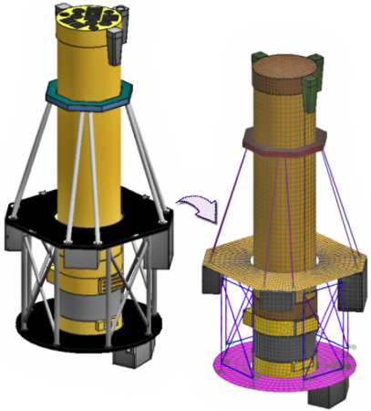

何时使用关联装配有限元模型：
存在将对其建模的系统的 CAD 装配
拥有或创建了 CAD 组件部件的基于几何体的有限元模型
要将现有的有限元模型映射到 CAD 组件中，在仿真导航器中右击被忽略的 CAD 组件部件并选择映射现有的。

如果包含某个相同 CAD 组件的多个实例，右击被忽略的 CAD 组件部件并选择查找所有匹配的组件。然后右击所选项并选择映射现有的，以将组件有限元模型映射到所有匹配的 CAD 组件。